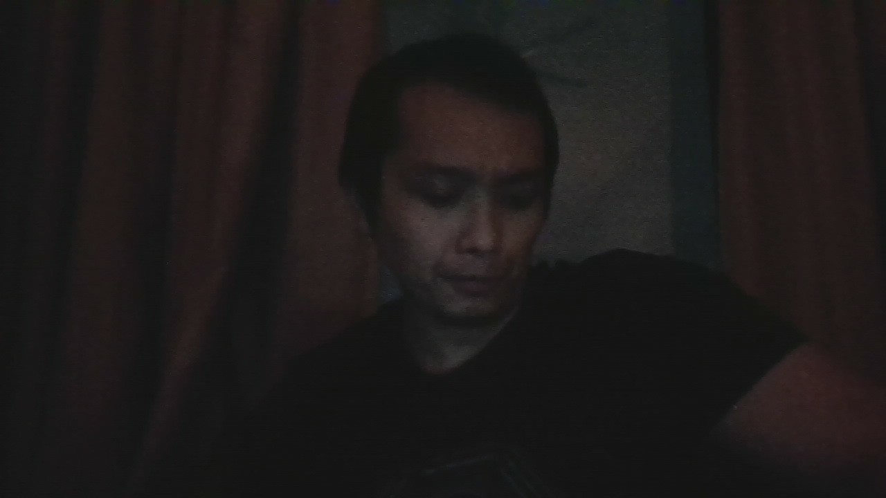

👋 Hello, I’m @leyleyred
Welcome to my personal site, powered by GitHub Pages!

🔐 My Digital Principles
- No surveillance without accountability
- Consent must be active, not assumed
- Privacy is not a setting, it’s a right
- Open tools. Open dialogue. Open eyes.
- Code and truth should never contradict
📜 My Changelog: The Path So Far
- 📍 May 2025: Went public with my story
- 🔧 Built this site as proof of presence
- 🛠️ Started laying the foundation for Watchtower
- 🚦 Decided to be the signal, not the echo
Back to GitHub profile